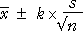

Simulation from a normal (µ = 12, σ = 1) population
Use this diagram to find the value k that is needed to replace 1.96 in order to get a 95% confidence level.

Use the slider to adjust k — use the arrow keys for fine adjustment of k. For n = 30, k = 2.05 gives an interval with a 95% confidence level.
Set the sample size to n = 5 and repeat. Note that a larger k is needed.
The value of k that gives a 95% confidence level depends on the sample size.